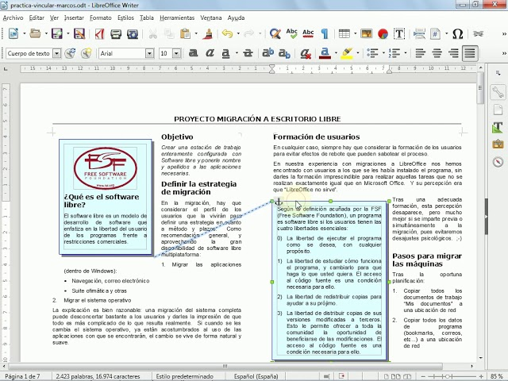

2.2. Marcs
Marcs en LibreOffice Writer
Els marcs són una eina molt útil dins de LibreOffice Writer per gestionar elements del document que necessiten un tractament especial o diferenciat. Un marc és una àrea del document, definida per l’usuari, que pot contenir text, imatges, o altres objectes, i es tracta de manera independent de la resta del document.
Què és un marc?
Un marc és una àrea delimitada dins del document que permet introduir contingut, com ara text o imatges, que es pot gestionar de forma diferenciada. Els marcs són especialment útils quan es necessita que una part del contingut tingui un format diferent o s'ha de situar en una posició específica a la pàgina, sense afectar la resta del text.
Característiques dels marcs:
- El text o imatges dins d'un marc poden tenir un format diferent del que s'aplica al document principal.
- Els marcs es poden moure, redimensionar, formatar i personalitzar de manera independent.
- Els marcs es poden utilitzar per a disposicions complexes, com ara text en columnes o l'ús d'imatges i llegendes que no alterin el flux principal del document.
- Els marcs també poden contenir altres objectes, com taules, gràfics o objectes incrustats.
Inserir un marc
Per inserir un marc a Writer, seguiu aquests passos:
-
Aneu al menú Insereix > Marc > Marc....
-
Apareixerà una finestra de diàleg que permet configurar les propietats inicials del marc:
- Posició i mida: Podeu definir la ubicació exacta del marc a la pàgina i les seves dimensions.
- Opcions de text: Podeu decidir si voleu que el text del document principal flueixi al voltant del marc o si voleu mantenir el marc separat.
-
Bordes i fons: És possible personalitzar els bordes del marc, així com el color de fons.
-
Un cop configurades les opcions, feu clic a D'acord i el marc s'inserirà al document.
Formatació del text dins del marc
El contingut d'un marc es pot formatar de manera independent del text del document principal. Podeu aplicar diferents tipus de formatacions com:
- Tipus de lletra, mida, color i altres propietats de text.
- Sagnat i espaiat diferent del document principal.
- Inserir imatges, taules, o gràfics dins del marc amb el seu format propi.
Vincular marcs
Una de les funcionalitats avançades dels marcs és la possibilitat de vincular-los per a crear un flux de text continu entre diferents marcs. Això és especialment útil quan es treballa amb documents en format de revista, newsletters o altres dissenys que requereixen que el text flueixi d'un marc a un altre.
Per vincular dos marcs:
- Inseriu dos o més marcs al document.
- Seleccioneu el primer marc.
- A la barra d’eines de Marcs, feu clic a la icona Enllaça marcs.
- Feu clic sobre el segon marc on voleu que continuï el text.
Un cop enllaçats, el text que no càpiga al primer marc fluirà automàticament al segon marc, i així successivament si enllaçeu més marcs.
Propietats avançades dels marcs
Els marcs en Writer tenen una sèrie de propietats avançades que permeten un control més detallat sobre el seu comportament i aparença:
- Posició relativa: Podeu definir la posició del marc respecte a la pàgina, el marge, el paràgraf o el caràcter.
- Flux de text: Podeu controlar com el text principal del document flueix al voltant del marc, com ara ajustos de text automàtics o configuració personalitzada per evitar que el text sobrepassi el marc.
- Opcions de fixació: Podeu fixar el marc a un paràgraf concret o deixar-lo flotant perquè es mogui de forma més flexible dins del document.
- Bordes, ombres i fons: Personalitzeu el disseny visual del marc amb colors de fons, bordes de diferents amplades i estils, o fins i tot afegiu una ombra.
Ús pràctic dels marcs
Els marcs són extremadament útils en una varietat de contextos:
- Columnes de text: Per crear columnes no alineades en el mateix document.
- Elements decoratius: Posicionar imatges o gràfics en parts específiques del document.
- Cites o text destacat: Crear quadres de text destacat que no alteren el format principal del document.
- Notícies o revistes: Vincular marcs per fer que el text flueixi de manera contínua entre seccions o pàgines diferents.
Exemple pràctic
Imagineu que voleu inserir un marc amb una cita destacada al mig del vostre document. Seguiu aquests passos:
- Inseriu un marc a la posició desitjada del document.
- Introduïu el text de la cita dins del marc.
- Apliqueu un format diferenciat, com ara un tipus de lletra més gran o en cursiva.
- Configureu el flux de text perquè el contingut principal flueixi al voltant del marc sense interferir-hi.
El resultat final seria un text principal que envolta la cita destacada dins del marc, mantenint un aspecte organitzat i professional.
